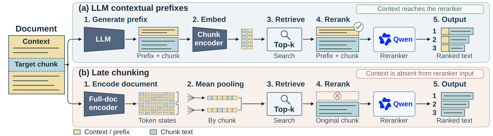
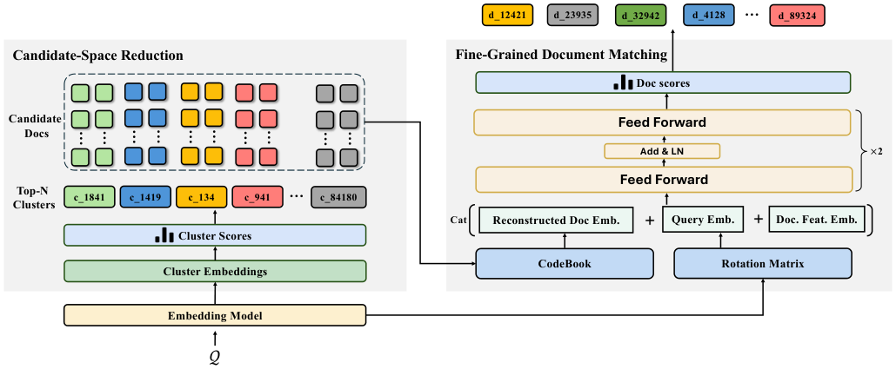
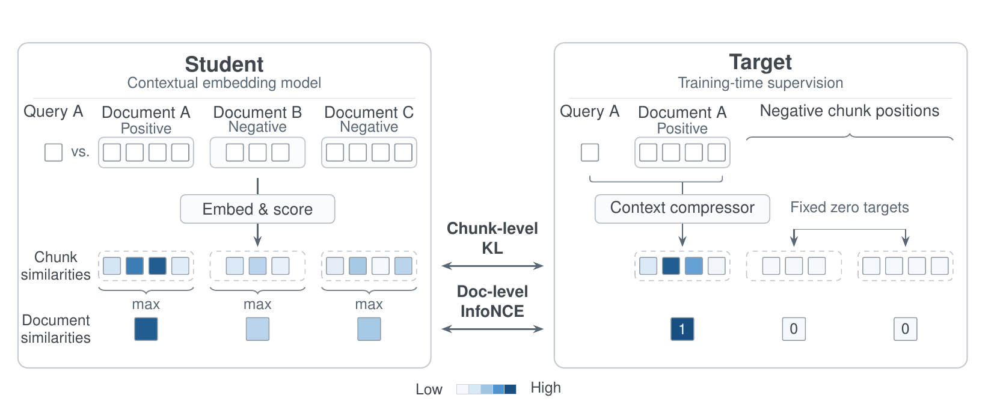
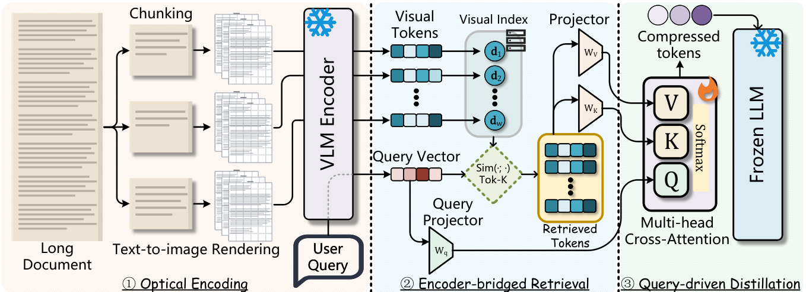

Contents · 7 sections
1The operating profit is in this table, the company name was cut into the previous chunk: how ConTra lets retrieval and reranking carry that context along2Prefixes carry into reranking; context trapped in a vector does not3Train a small model with retrieval feedback to write short prefixes4Walkthrough: one prefix through both retrieval stages5After training, prefixes get sharper—and shorter6What this means for indexing pipelines7LimitationsSHARE
The operating profit is in this table, the company name was cut into the previous chunk: how ConTra lets retrieval and reranking carry that context along
Chunk an annual report for indexing and you hit a familiar failure mode: a query asks for a company's operating profit in a given fiscal year, the number sits right there in the table, and the company name and year stayed behind in the previous section's heading. One chunk boundary splits them apart.
Vector retrieval matches on table structure and wording, so tables from other companies or adjacent years slip right into the candidates. Then the reranker reads the same raw table text. With the heading gone, it has nothing to kick out the wrong company.
Jiajun Hou and Jingbang Chen at The Chinese University of Hong Kong, Shenzhen, go after that exact tension: long documents have to be split into chunks, yet each chunk still needs the document context required to retrieve and rank it accurately. The paper discusses two approaches to preserving document context. One folds surrounding document context into the chunk vector—late chunking encodes the document and pools by chunk; InSeNT trains with in-document negatives; PPLX (Perplexity's contextual encoder) pairs diffusion pretraining with contrastive retrieval training; and Voyage-context outputs document-aware chunk vectors. They change the vector, while the reranker still receives the raw chunk text. The other follows Anthropic's approach: prompt a large model to write a prefix for each chunk, and pass "prefix + original text" to both retrieval and reranking. Prefixes can be written offline and reused across queries, but indexing gets expensive; and in earlier evaluations focused on single-stage retrieval, those prefixes often trailed strong contextual encoders.
Those evaluations mostly looked at embedding similarity and left reranking out. Because a readable prefix is plain text, both stages can read it; judging it on retrieval scores alone undersells what it buys in a multi-stage pipeline. Their framework, ConTra (Context That Travels), uses reinforcement learning to train small 0.8B, 2B, and 4B models to write a short prefix for each chunk at index time, storing "prefix + original text" alongside its embedding. At query time, vector retrieval and reranking read that same text. On ConTEB (a benchmark built to test whether a chunk can still be found once separated from its document context, covering eight tasks including insurance filings and biomedical articles), ConTra-2B reaches a reranking nDCG@10 of 0.8525—2.46 points ahead of a 9B model using Anthropic's prompt, and well above PPLX-4B when the reranker only reads the original text (0.7310). On a short-document collection, it indexes 7.74× faster than the 9B prompting pipeline. The authors also built RealContextBench to check whether the gains hold up on other applications or when surrounding distractor text gets mixed in.
A readable prefix works across both retrieval and reranking; stuffing context into the vector alone does not turn higher recall into a better final ranking. Training and testing are both on public retrieval benchmarks.
Prefixes carry into reranking; context trapped in a vector does not
The split between the two pipelines is straightforward. On the upper path, the generated prefix goes in front of the original text, so both the embedding model and the reranker read it. On the lower path, context stays locked inside the vector, and the reranker gets only the original chunk.

To isolate where the gain comes from, the authors ran a controlled test on ConTEB. They had an untrained Qwen3.5-2B generate prefixes with Anthropic's prompt, froze those prefixes, and varied only which stage saw them. Candidate retrieval used Qwen3-Embedding-4B to pull the top 15; reranking always used Qwen3-Reranker-4B. The table below reports the macro-average over eight tasks.
| Text seen by retrieval | Text seen by reranking | Recall@15 | Final nDCG@10 |
|---|---|---|---|
| Original | Original | 0.7691 | 0.6483 |
| Prefix + original | Original | 0.8475 | 0.6924 |
| Original | Prefix + original | 0.7691 | 0.6940 |
| Prefix + original | Prefix + original | 0.8475 | 0.7585 |
| PPLX-4B vector | Original | 0.9387 | 0.7310 |
| PPLX-4B vector | Prefix + original | 0.9387 | 0.8135 |
Prepending the prefix before encoding separates relevant chunks more cleanly, bringing more gold chunks into the top 15 and lifting Recall@15 from 0.7691 to 0.8475. Even when the reranker still reads only the original text, that better candidate pool moves final nDCG@10 from 0.6483 to 0.6924. Flip it around—keep the original candidates and expose the prefix only to the reranker—and the final score moves from 0.6483 to 0.6940. Feeding the prefix to both stages reaches 0.7585.
PPLX-4B sharpens the contrast. Its retrieval is actually stronger, with Recall@15 at 0.9387 and embedding nDCG@10 at 0.8210, beating the untrained 2B prefix on both. Yet when the reranker only reads the original text, final nDCG@10 stalls at 0.7310—behind the 0.7585 from using the prefix at both stages. The context that retrieved the chunk is stuck inside the vector, where a text reranker cannot reach it. Attach that same prefix to the candidates PPLX-4B already returned, without adding a single new candidate, and final nDCG@10 jumps to 0.8135. High recall does not automatically become a better final ranking.
Train a small model with retrieval feedback to write short prefixes
Even plain prompting shows what a 2B model can do with prefixes. To make those prefixes sharper and cheaper to index, the authors wire retrieval feedback directly into reinforcement learning. The generator takes a source window and a separately marked target chunk: the full document if it fits the budget, otherwise adjacent complete chunks in original order. Because it never sees the query at inference, each chunk gets one prefix at index time, and the index stores the concatenated text alongside its vector for reuse across queries.
Training data comes from ConTEB's training split. Left to itself, a small generator drifts toward broad topical summaries that barely separate near-duplicate chunks. Starting from 100,000 sampled query–target pairs, the authors used GPT-6 Luna to extract missing entities, dates, or relations against the original text, then wrote two prefixes per pair: one carrying specific identity information and a generalized one covering only the topic. Two filters narrow the set down. One checks whether multiple candidate prefixes for the same input produce enough reward spread; the other requires the specific prefix's nDCG@10 to beat the generalized prefix by at least 0.05 without dropping below the no-prefix baseline. That leaves 5,760 pairs. All three model sizes initialize from Qwen3.5 and train with reinforcement learning for one epoch.
The reward sums four terms:
R = R_emb + R_rank + R_fact + R_len
The first two terms measure the marginal gain of adding the prefix over keeping the bare chunk. Both apply directly to the target chunk: online training does not run full-corpus retrieval and does not look at the chunk's rank in a candidate set. On the embedding side, the authors use a mixed query vector—75% from the original query and 25% from a query that includes the document opening—so pronouns like "he" or "the facility" in a training query can still match the entity names filled into the prefix. R_emb is the cosine-similarity gain of the augmented chunk over the original chunk against this mixed query, clipped to [-1, 1]:
R_emb = clip(cos(mixed query, prefix+chunk) - cos(mixed query, original chunk), -1, 1)
At inference, the original query is encoded as usual. On the reranking side, they take the change in the reranker's relevance logits:
R_rank = 0.025 tanh(z(query, prefix+chunk) - z(query, original chunk))
Holding the magnitude inside [-0.025, 0.025] keeps it a fine-grained tie-breaker instead of letting it drown out the smoother embedding signal. Malformed or mid-generation truncated outputs score -1.5, below the theoretical minimum of -1.475 for any valid prefix.
Relevance alone is easy to game. Slap an executive's name onto someone else's paragraph when a query asks about that executive's decision, and both embedding similarity and the reranker score climb even though the prefix contradicts the text. To block that, the authors froze a Qwen3.5-4B judge to check two things: whether the original text supports the prefix, and whether the claim belongs to the target chunk. Above a support score of 0.75 there is no extra bonus, keeping the model from farming safe, generic filler; below that threshold, the penalty scales with the gap down to a maximum of -0.25. In the paper's example, a support score of 0.45 scores -0.10—four times the maximum positive reranking reward. Hoot says

Swipe through the three steps. The 0.45 and -0.10 in the first two steps are the paper's example; the 0.025 cap on the reranking reward comes from the formula in the text. Step three adds the two terms to get -0.075, which is recomputed here and is not written as a total in the article. The full reward still adds the embedding and length terms.
Source
This section: R = R_emb + R_rank + R_fact + R_len; R_rank = 0.025 tanh(Δz), held in [-0.025, 0.025]; no bonus above support 0.75, and the penalty scales down to -0.25 below the threshold; in the paper's example, support 0.45 gives R_fact = -0.10. -0.075 is recomputed as 0.025 + (-0.10).Length needs a ceiling too. Prefix every chunk with full-document background and adjacent chunks start looking alike, crowding each other for the same queries. The first 16 tokens carry no penalty; past that, a linear penalty ramps up to a cap of -0.2 at 112 tokens. Shorter prefixes also cut decoding steps and shrink the encoder input at index time.
Optimization uses DAPO (a reinforcement-learning algorithm that compares rewards within a group and drops examples whose group rewards are all identical). Each example samples 16 prefixes, scored by the frozen embedding model, reranker, and factuality judge; only the generator gets updated.
Walkthrough: one prefix through both retrieval stages
Go back to that orphaned operating-profit table and trace how a single prefix moves through both stages. The company name and year below—illustrative, fictional Oakmere Group and FY2024 (fiscal year 2024)—are used only to keep the steps concrete; the ConTEB scores are the eight-task macro-average from the paper's Table 1, not a standalone result for this table example.
The bare chunk holds only table numbers. The query asks for "Oakmere Group's operating profit in FY2024," while the company name and year stayed behind in the previous chunk's heading. Vector retrieval matches on table layout, letting other companies' tables into the top 15; the reranker reads the same anonymous table and cannot sort them out. In Table 1, when both stages see only the original text, Recall@15 is 0.7691 and final nDCG@10 is 0.6483.
At index time, the generator scans the source window, picks up the heading next to the table, writes an illustrative prefix such as "Oakmere Group's FY2024 operating profit table," and prepends it to the original table. Because that text is generated offline without seeing any query, the index stores it once and reuses it across queries.
At retrieval, the encoder embeds "prefix + original table." With Oakmere Group and FY2024 inside the vector, the target chunk aligns better with the query and separates cleanly from other companies' tables. In Table 1, turning the prefix on for retrieval alone pushes Recall@15 to 0.8475; even if the reranker still reads the original text, the better candidate pool alone lifts final nDCG@10 to 0.6924.
At reranking, the reranker reads that same "prefix + original table" and verifies directly whether the company and fiscal year—Oakmere Group, FY2024—match. Leaving the candidate set unchanged and feeding the prefix only to the reranker lifts final nDCG@10 from 0.6483 to 0.6940; feeding it to both stages reaches 0.7585.
Stack that against the vector-only path. PPLX-4B gets stronger recall, with Recall@15 at 0.9387, yet because the reranker cannot see the context buried inside the vector, the final score stalls at 0.7310—below the 0.7585 from prefixes at both stages. Prepend the same readable prefix to PPLX-4B's existing candidates, add no new candidates, and the final score climbs to 0.8135. The candidates were already there; what blocked the ranking was that reranking could not read that identity information.
After training, prefixes get sharper—and shorter
Once retrieval feedback trains the generator, the same two-stage pipeline beats a larger prompted model. On ConTEB, the setup stays fixed: Qwen3-Embedding-4B retrieves the top 15, and Qwen3-Reranker-4B reranks them.
| Method | Retrieval nDCG@10 | Reranking nDCG@10 |
|---|---|---|
| Qwen3-Embedding-4B (no context) | 0.5484 | 0.6483 |
| PPLX-4B | 0.8210 | 0.7310 |
| Voyage-context-4 | 0.7981 | 0.7300 |
| Prompted Qwen3.5-9B | 0.7376 | 0.8279 |
| ConTra-2B | 0.7469 | 0.8525 |
ConTra-2B hits 0.8525 after reranking, 2.46 points above the prompted 9B's 0.8279. PPLX-4B and Voyage-context-4 lead at retrieval, yet with the reranker reading only the original text they settle at 0.7310 and 0.7300. Against same-size prompt baselines, training lifts final scores by 8.15 points at 0.8B, 9.40 at 2B, and 3.55 at 4B. And written prefixes transfer without retraining: the lead holds when switching to Qwen3's 0.6B or 8B retrieval models, or widening the candidate pool from 10 to 20. Widening the pool actually helps prefixes, since the reranker can read identity details and promote relevant chunks sitting lower down; PPLX and Voyage slip as the candidate set grows.
Parameter scale still caps how specific a prefix gets. Smaller generators fall back on broad topical summaries; larger ones are the ones that can extract concrete entities and relations. The Insurance task shows this plainly: long documents contain similarly formatted tables that have to match a country heading located elsewhere. Before training, the 4B and 9B models already hit 1.000; the 0.8B sat at 0.199 before training and 0.160 after. At that scale, reinforcement learning cannot recover long-range structure.
In the ablations, dropping the length control causes the biggest drop across every scale. On the 4B model, average prefix length blows up from 17.7 tokens to 239.2, and final nDCG@10 drops from 0.8465 to 0.7084—adjacent chunks get stamped with the same document background and compete for the same queries. Dropping reranking feedback hurts the 2B most: Insurance collapses from 1.000 to 0.159. The 2B model can locate the country heading in the original text, and it is this reward that forces it to keep that identifier. Dropping the factuality check barely dents the 2B's retrieval score, yet in a paired human inspection of 200 examples, prefix factual errors jump from 4.5% to 16.0%. Because nDCG@10 grades by chunk ID, a fabricated prefix tailored to the query can still push the right chunk up the list; once those augmented texts go straight into a QA system as evidence, unreliable prefixes skew the context.
Indexing time was measured on a single H100 80GB GPU (median of three runs) and covers both prefix generation and vector computation. On the short-document collection, FairytaleQA (23 documents, 342 chunks), shorter post-training prefixes bring ConTra-2B down to 3.75 seconds—7.74× faster than the prompted 9B's 29.02 seconds, and 2.15× faster than PPLX-4B's 8.08 seconds.
On the long-document collection—51 documents and 1,027 chunks from Natural Questions—ConTra-2B takes 55.58 seconds, 4.82× faster than the prompted 9B's 268.12 seconds and 1.40× faster than PPLX-4B's 77.97 seconds. Holding scale at 2B, training cuts short-document indexing from 7.87 seconds to 3.75 seconds (the "up to 52.3%" stated in the paper), because generation length per chunk shrinks from 82.4 tokens to 23.8.
Even with that speedup, indexing stays clearly slower than encoding the original text directly with Qwen3-Embedding-4B, which takes 1.01 seconds on short documents and 7.92 seconds on long ones. Storage overhead is light, though: relative to original text plus vectors, the two collections grow by only 0.96% and 0.79%.
Cross-task generalization is more modest. Trained only on ConTEB, ConTra-2B lifts overall reranking nDCG@10 across RealContextBench's eight settings from the same-size prompt baseline of 0.6456 to 0.6692—highest in the paper, though Voyage-context-3 sits at 0.6636 and the prompted 9B at 0.6632, leaving a lead of only about 0.006.
The rank reversal on FinanceBench is more telling. At the embedding stage, Voyage-context-4 still leads (0.524 vs 0.402), but reranking flips the order to ConTra-2B's 0.5248 over 0.4692. Financial filings routinely list numbers without the company name; once the prefix puts company identity into plain text, the reranker can actually verify the match.
Prefixes also hold up better against distracting neighbors. After random neighbors are inserted, PPLX-4B's reranking drops 2.66 points, while the prompted 2B drops only 1.19; after training, ConTra-4B's average reranking across three context conditions in NanoBEIR (a set of benchmark settings used to contrast surrounding text) rises from 0.6831 to 0.7138. Pairing PPLX-4B's recall with ConTra prefixes also works: on collections such as meetings, stories, and technical support, the hybrid pipeline scores higher, for example the 2B on the meeting-transcript collection QMSum rises from 0.3811 to 0.4140; but under random interference, standalone ConTra-2B scores 0.7102, while the hybrid pipeline only reaches 0.6729, and still carries an extra PPLX encoding cost.

Figure 2 shows two complementary ways prefixes work. In the Natural Questions example, the query asks who wrote the Winter Olympics theme, and the annotated answer is Leo Arnaud. ConTra-2B gives an adjacent paragraph the prefix Leo Arnaud's "Bugler's Dream," its significance, origins, and Olympic uses., pushing that chunk to 1st while the gold chunk drops out of the top five. Scored by chunk ID, that counts as a miss, even though the top-ranked text already carries the complete answer. The other example has no surrounding document at all: the target passage already names rumination syndrome, the alias Merycism, and the main symptom of food regurgitation, and the prefix lifts those attributes to the front. With PPLX's candidates held fixed, the gold passage moves from 4th to 1st. Because the relevance rewards compare the augmented chunk's query similarity and relevance-logit gain against the original chunk—online training does not run full-corpus retrieval and does not compute a change in rank—the model pulls in outside context when available, and surfaces key facts already inside the chunk when there is little around it.
What this means for indexing pipelines
In the pipelines this paper evaluates, a readable prefix lets the text reranker use document context and improves the final ranking.
Teams already running embedding retrieval plus a text reranker can turn identity information into a short prefix, write it once at index time, and share it across both stages at query time. ConTra-2B shows there is no need to lean on prompting a 9B model: a small model with one round of retrieval feedback beats that and indexes much faster on short documents. Neither the length cap nor the factuality check can be skipped—without the length cap, adjacent chunks crowd each other on the same queries; without the factuality check, factual errors in the sample jump from 4.5% to 16.0%. On clean corpora where recall matters most, you can pull candidates with a strong contextual encoder and prepend this prefix for the reranker; when surrounding noise is high and indexing cost matters more, standalone ConTra is simpler. Do not expect the 0.8B scale to parse long-document structure: it cannot match headings across long distances, and training does not close the gap on Insurance.
Limitations
ConTra's reinforcement learning ran only on ConTEB's 5,760 pairs; RealContextBench is a cross-task evaluation. Its overall reranking score ranks highest there, but the margin over Voyage-context-3 and the prompted 9B is only about 0.006, so it should not be read as a wide lead once the setting shifts. Even with the factuality check, 4.5% of prefixes in the 200-example inspection still contain factual errors. Indexing remains clearly slower than encoding the original text directly, and the paper reports neither query-time latency nor production business numbers. Scoring by chunk ID can also undercount cases where an adjacent chunk has been completed with the answer and ranks ahead of the gold chunk, as in the Leo Arnaud example in Section 8.
How did this read for you?
Hoot made a note. Thanks for the feedback.
One tap, no sign-in; tap again to undo. Only anonymous counts are kept, never who you are.
Related papersMore from Paper Daily
 Retrieval · 2026-11-02Retrieving from Your Own Mistakes: On-Policy Training of Embedding Models for Multi-Hop Retrieval-Augmented GenerationChain embedding retrievers for multi-hop retrieval see different histories in training and in use, and this paper fixes that without adding any LLM call. At each step such a retriever joins the question with the passages found so far to look for the next one; in training its history holds only correct passages, but in use it often holds wrong passages it found itself. On four-hop MuSiQue question…
Retrieval · 2026-11-02Retrieving from Your Own Mistakes: On-Policy Training of Embedding Models for Multi-Hop Retrieval-Augmented GenerationChain embedding retrievers for multi-hop retrieval see different histories in training and in use, and this paper fixes that without adding any LLM call. At each step such a retriever joins the question with the passages found so far to look for the next one; in training its history holds only correct passages, but in use it often holds wrong passages it found itself. On four-hop MuSiQue question…
Retrieval · 2026-11-04WeSearch: A Unified Model-Centric Retrieval Framework for WeChat SearchWeSearch at WeChat Search replaces the old set of parallel retrieval paths with one model: it first finds the document clusters relevant to the query, then scores individual documents inside those clusters, separating coarse pruning from fine relevance judgment. Unlike generative retrieval, it does not give each document one fixed hierarchical Semantic ID; that approach assumes a document follows… Retrieval · 2026-10-25When Agentic Retrieval Fails Silently: Framework and Production Evidence from a Creative AI AssistantIn Adobe Express's AI assistant, retrieval metrics that assume the user saw a ranked list and acted on it stop working. The chat entry point has a reformulation rate of 44.4%, higher than the template gallery search served by the same retrieval system, at 33.1%. The reason is that reformulation means different things on the two sides. In the gallery, a user reformulates because the results were i…
Retrieval · 2026-10-25When Agentic Retrieval Fails Silently: Framework and Production Evidence from a Creative AI AssistantIn Adobe Express's AI assistant, retrieval metrics that assume the user saw a ranked list and acted on it stop working. The chat entry point has a reformulation rate of 44.4%, higher than the template gallery search served by the same retrieval system, at 33.1%. The reason is that reformulation means different things on the two sides. In the gallery, a user reformulates because the results were i…
Retrieval · 2026-11-02Contextual Embeddings Beyond the Gold ChunkContextual embeddings are trained and evaluated as if a question had only one relevant chunk in a document, and this paper shows that assumption fails in RAG. Answering a question often also needs the chunks that say which product or which year the answer is about, yet current training treats every chunk of the same document other than the answer chunk as a negative, so these supporting chunks ge… Retrieval · 2026-11-16CURATOR: Scalable Fine-grained Evidence Selection for Retrieval-Augmented Generation using Decision ModelsRAG usually stuffs whole retrieved passages into the LLM, though often only a few sentences in them can answer the question. Picking those sentences is not easy: a sentence can look irrelevant on its own, and whether to keep it may depend on other retrieved text. Judging each sentence with the full context is too expensive. Decision models can score many candidate sentences in one pass, with each…
Retrieval · 2026-11-16CURATOR: Scalable Fine-grained Evidence Selection for Retrieval-Augmented Generation using Decision ModelsRAG usually stuffs whole retrieved passages into the LLM, though often only a few sentences in them can answer the question. Picking those sentences is not easy: a sentence can look irrelevant on its own, and whether to keep it may depend on other retrieved text. Judging each sentence with the full context is too expensive. Decision models can score many candidate sentences in one pass, with each… Retrieval · 2026-11-13PCG-RAG: Progressive Compositional Grounding for Retrieval-Augmented Generation in Complex Web Question AnsweringComplex web QA often requires first working out who or what several clues describe, then looking up an attribute of it, and a common mistake is to treat a name as settled after only one clue matches. The paper's example is a London power station converted into an art museum: a system that settles on Battersea from London and power station alone retrieves an architect who actually belongs to a dif…
Retrieval · 2026-11-13PCG-RAG: Progressive Compositional Grounding for Retrieval-Augmented Generation in Complex Web Question AnsweringComplex web QA often requires first working out who or what several clues describe, then looking up an attribute of it, and a common mistake is to treat a name as settled after only one clue matches. The paper's example is a London power station converted into an art museum: a system that settles on Battersea from London and power station alone retrieves an architect who actually belongs to a dif…
Retrieval · 2026-11-12OpticalRAG: Pixel-Space Compression for Token-Efficient Retrieval-Augmented GenerationTo save tokens, RAG systems usually delete words or summarize the text, and the harder they compress, the more detail they lose. OpticalRAG goes the other way: it renders documents as page images, encodes them into visual tokens with a frozen vision encoder, and does both retrieval and compression on those visual tokens. A text query passes through a light projection into the same visual feature… Retrieval · 2026-11-11Lightfoot: Graph Retrieval-Augmented Generation with Exact, Model-Free Document DeletionGraphRAG in production has two costs that papers rarely count: what it takes to build the graph, and how painful it is to delete a document. When a contract expires or a user asks for erasure, a document and everything derived from it must go, yet entity summaries that blend several documents are hard to take apart. Lightfoot requires every record in the graph to be computed only from single-pass…
Retrieval · 2026-11-11Lightfoot: Graph Retrieval-Augmented Generation with Exact, Model-Free Document DeletionGraphRAG in production has two costs that papers rarely count: what it takes to build the graph, and how painful it is to delete a document. When a contract expires or a user asks for erasure, a document and everything derived from it must go, yet entity summaries that blend several documents are hard to take apart. Lightfoot requires every record in the graph to be computed only from single-pass…
Discussion
Add experiment details, reproduction notes or a different take. Requires a GitHub sign-in.
Loading the discussion…